Main theorem 5
Where the theorem is proved 5
About this draft 7
Reading guide 9
List of figures 17
1Lattice gauge theory and the continuum problem 19
1.1The gauge group and its normalization 19
1.2Links, holonomies and the Wilson measure 20
1.3Physical scales and lattice symmetries 21
1.4Reflection positivity 22
1.5Correlations and the order of the limits 24
1.6How the construction is organized 26
2Local gauge-invariant observables 29
2.1Radial jets and polynomial labels 29
2.2Test holonomies and Taylor normalization 30
2.3Finite-stencil representatives 31
2.4Small-field bounds for the representatives 34
2.5Local representatives of the equations of motion 35
2.5.1Curvature tests avoiding a prescribed link 36
2.5.2Construction of the equation-adapted section 37
2.6Examples and the remaining normalization problem 39
3The free Maxwell comparison theory 41
3.1Curvature covariance 41
3.2Local polynomials and Wick correlations 42
3.3The on-shell polynomial space 43
3.4Reflection and the meaning of nondegeneracy 44
3.5Strict positivity of finite jet families 46
3.6Quadratic fields and normalization checks 49
3.7The conserved tensor of scaling dimension four 49
3.8Local stress fluxes 51
3.9Separating fields by insertions of bounded scaling dimension 52
3.10Finite correlation criteria for infinitesimal symmetries 54
4Exact blocking and effective densities 59
4.1Local gauges and a symmetric frame choice 59
4.2Gauge-covariant block averaging and the exact kernel 61
4.3A first-power bound for the actual block average 64
4.4Small fields and density coordinates 66
4.5The prescribed leading action 66
4.6The exact-cover representation and its norms 67
4.7Conditions for a one-step induction 69
5Gaussian kernels and stationary backgrounds 71
5.1Lattice differential forms and zero modes 71
5.2The exact Gaussian block transformation 72
5.3Averaging and the Fourier alias formula 73
5.4Gauge reduction and a regular curvature symbol 74
5.5Uniform estimates over finite blocking histories 75
5.6Exact transports and the curvature defect 77
5.6.1A positive factorization of the defect 79
5.7Convergence at a fixed scale 80
5.8Uniform inverse bounds: the hypotheses that matter 83
5.9The actual block average and the forest coordinates 84
5.9.1A common analytic branch for all local labels 84
5.9.2The tree comparison and the actual Hessian 85
5.9.3A smooth representative of the stationary tangent 86
5.10A stationary background on a uniform neighborhood 88
5.10.1Supplying the local derivative estimates 89
5.11Scope of the completed Gaussian construction 91
6Large fields and local Gaussian integration 93
6.1Selected tests and the local energy 93
6.1.1An exact completion of squares 94
6.1.2Direct bounds and the signed comparison 96
6.2The actual sector Gaussian 99
6.2.1Transferring a local tree estimate to the actual rows 100
6.2.2Local inverse columns 100
6.2.3The source and derivatives on a fixed sector 101
6.2.4The exact integral and its normalization 102
6.3Differentiation on a common dependence region 103
6.3.1Differentiation under the common Gaussian law 104
6.4Simultaneous tail estimates 105
6.4.1The deterministic estimate behind a cutoff remainder 106
6.4.2The bounded-jet route for local activities 108
6.4.3One majorant for the product 109
6.5Weighted bounds for the primitive local factors 110
6.5.1Gaussian correction series 110
6.5.2Short local and inherited terms 111
6.5.3Components and assembly under one law 112
6.5.4Comparison with the linear local integral 114
6.6What must be checked for a concrete step 115
7Local matching and the one-loop coefficient 117
7.1Common Taylor kernels and Ward identities 117
7.2Division by the lattice curl 118
7.3The marginal quadratic coefficient 119
7.4Haar measure and gauge completion 120
7.5The auxiliary lattice determinant 121
7.6Uniform comparison of determinants 124
7.6.1The stationary branch and the block average contact term 124
7.6.2Bounds for the actual centered matrices 125
7.6.3The one-loop drift 129
7.7Classical matching through fourth order 130
7.7.1Uniform classical stationary coefficients 130
7.7.2Construction of the matching curvature terms 131
7.7.3Preserving the classical coefficient bound 132
7.8Inherited loops: four differences and alias suppression 133
7.9Output coefficients and the remaining analytic width 134
8Polymer expansions and connected correlations 137
8.1Activities, supports and incompatibility 137
8.2The logarithm and its convergence criterion 138
8.3A spatially local bound with a geometric tail 139
8.4Deleting polymers and controlling local changes 140
8.5Parameters, derivatives and connected insertions 140
8.6Large-field constraints and exact reassembly 141
8.7What an application must supply 142
9The nonlinear renormalization step 145
9.1The exact local integral and its first expansion 145
9.2Improving the regular remainder 147
9.2.1Terms containing several elementary factors 147
9.2.2The linear inherited regular term 147
9.2.3Low-order terms and localization 148
9.2.4The stationary integral with its cutoff retained 149
9.2.5Identifying the retained region in the actual integral 150
9.2.6Centering the full logarithm 152
9.2.7Recovering a local density 153
9.3A precise preparatory output 154
9.4Local quadratic subtraction 155
9.5Replacing the local quadratic term by the path action 156
9.6Absorbing logarithmic corrections into large-field activities 157
9.7The normalization of the field-independent term and continuity 158
9.8Wilson initialization 160
9.9The one-step conclusion and its input data 161
10A common trajectory and fixed-scale stability 163
10.1What is fixed before choosing the scales 163
10.2A slowly increasing stage schedule 165
10.3Tuning a finite history to the coarse endpoint 166
10.4Uniform logarithmic running 167
10.5The coefficient comparison before the activity comparison 167
10.6The stronger local comparison required for cutoff limits 169
10.7Convergence of the coupled histories 175
10.8Identifying the analytic comparison on the selected family 177
11Marked insertions and finite-scale comparison 179
11.1An algebra for finitely many insertions 179
11.1.1The exact density and its integral 180
11.2Joint local terms and large-field components 181
11.3Support bounds for several marked components 182
11.4One marked step with the actual local factors 182
11.4.1The one-insertion graph estimates 184
11.4.2Propagating the already formed terms involving at least two insertions 186
11.5A common Gaussian comparison 187
11.5.1The exact cross-covariance on the selected forest 188
11.5.2Actual local coordinate and cutoff estimates 189
11.6Restarting below a comparison level 190
11.6.1Constructing the restarted representations 190
11.7The normalized integral with several insertions 196
11.7.1An independent positional modulus 197
11.8Backward comparison of a local trial 198
11.9Finite-dimensional detection before taking limits 199
11.10Collected estimates and local calibration 200
11.11Calibrating the microscopic equations on the same history 201
11.12The moving equation space and uniform finite differences 203
11.12.1A common localization map for the separating family 204
11.12.2Absorbing the larger source weight 207
11.12.3The actual covariance on a comparison window 212
11.12.4From the common polynomial localization to the corrected pair bound 214
11.12.5Finite-arity comparison on a common finite set of scales 216
12The ultraviolet limit at fixed volume 221
12.1Fixed-level convergence data 221
12.2Contraction of the complete marked remainder 222
12.3The scalar normalization cancels 223
12.4A stopping estimate uniform in the stopping level 224
12.5Smoothness and all lattice differences 225
12.6The fixed-volume conclusion 226
13Continuum correlations and local fields 229
13.1One subsequence of volumes 229
13.2Separated cells and errors in local observables 230
13.3Fields as equivalence classes of labels 231
13.3.1Representatives independent of the other insertions 232
13.4Inclusions and derivatives 233
13.5Reflection positivity and separated power bounds 233
13.6Repeated reflected words 234
13.7Sharp fixed-arity short-distance bounds 235
13.7.1A normalized local insertion 236
13.7.2The stopping scale and centered estimate 237
13.7.3Arbitrary separated points 237
13.8Bounded real approximations for separated words 238
13.9Scaling dimension and the physical quotient 243
13.10Local replacement of a cluster on the lattice 245
13.10.1Signed local transport 245
13.10.2Grouping marks and retaining their supports 246
13.10.3Extraction with a freely chosen residual weight 247
13.10.4A mixed-correlation consequence without phases 248
14Reflection spaces, Ward identities and Euclidean symmetry 251
14.1Reflection spaces for the coordinate axes 251
14.2Bounded insertions in a slab 252
14.3Comparing the mixed fields with free fields 253
14.3.1Obtaining the three comparison bounds from one lattice family 254
14.4The conserved stress line 256
14.5Shrinking shells and local charge fields 257
14.6Coordinate spectral measures and the angular boundary 258
14.6.1What opposite reflection signs control 259
14.6.2The separate diagonal-stress estimate 261
14.6.3Vanishing angular flux at infinity 263
14.7Normalization and propagation of the Ward identities 264
14.7.1Analyticity supplied by a positive Gram kernel 265
14.7.2A finite path through separated configurations 266
14.8The rotation action and the normalized tensor 266
15Decomposition into phases 269
15.1The zero-energy subspace 269
15.2Compression and separation of clusters 269
15.3Characters and the representing measure 271
15.4Symmetries in each phase 271
15.5Positivity, field identities and null spaces 272
15.6Selecting a phase with a unique ground vector 273
15.7Sharp separated bounds in every phase 274
16Relativistic reconstruction in every phase 275
16.1Complex time and a uniform boundary distribution 275
16.2Lorentz covariance and the spectral cone 277
16.3The spacetime tube and locality 278
16.4Field words and the reflection space 279
16.5The low-energy estimate and uniqueness of the vacuum in each phase 280
16.6The weak commutant and local stress charges 282
17The trace law and its consequences 285
17.1Centering and the positive spectral measure 285
17.2Comparison at prescribed radii 286
17.2.1Comparison windows crossing changes of stage 287
17.3Tensor coordinates and the regulated current 289
17.4Exact current transport and the scalar regulator 291
17.4.1Difference-preserving block averages 291
17.4.2What scalar mass regularization changes 292
17.4.3Exact integration by parts and the remaining current estimate 293
17.4.4The group-coordinate contact identity 293
17.4.5Cancellation of the action-gradient terms 295
17.4.6Power counting the regulator remainder 296
17.4.7The corrected coefficient and order of limits 296
17.5Current conservation and uniform transfer bounds 298
17.5.1Preservation of the low moments 299
17.5.2A homogeneous bound for the quadratic channel 299
17.5.3The nonlinear terms need fixed-ratio bounds 300
17.5.4Why action matching introduces no source 301
17.5.5Uniform current and difference-primitive bounds 302
17.6Quantitative stability of the trace functional 304
17.7From the current identity to marked coefficient estimates 304
17.7.1A differentiated block kernel 304
17.7.2The finite degree-five coefficient 306
17.7.3The equation direction and the necessary rates 310
17.8The coefficient and the all-radius limit 312
17.9What the trace law excludes 313
18Operator products and extensions across diagonals 315
18.1A fixed prescription for all finite degrees 315
18.2The marked replacement estimate 317
18.3Finite-order operator product expansion 319
18.4An explicit finite-order extension across every diagonal 320
18.5Sharper subtraction and dependence on the prescription 322
19Assembly and the scope of the construction 325
19.1One family and the order of its limits 325
19.2Assembly of the construction 325
19.3Conclusions that are not supplied 327
Notation in the current draft 329
References 331
The starting point is a probability measure on finitely many group-valued variables. Its definition requires neither gauge fixing nor a continuum functional integral. The construction problem is to choose its coupling and its local observables as the lattice is refined, and to control their correlations uniformly enough to remove the cutoff.
Two limits have different roles. At a fixed physical volume, the lattice spacing will tend to zero along a prescribed sequence. Only afterwards will the volume tend to infinity, along a subsequence. Keeping these operations separate is essential: compactness can produce a subsequence, but cannot by itself give convergence along every ultraviolet cutoff.
Fix a closed subgroup \(G \subset U (n_G)\) in a specified faithful unitary representation. Its real Lie algebra \(\mathfrak{g}\) consists of skew-Hermitian matrices, and we assume that \(\mathfrak{g}\) is simple and nonabelian. The group itself need not be connected. We use the invariant inner product
| \(\displaystyle \langle X, Y \rangle_{\mathfrak{g}} = - \frac{1}{n_G} \text{Re} \hspace{0.17em} \text{tr} (XY), \qquad X, Y \in \mathfrak{g}. \) | (1.1) |
The choice of representation is part of the normalization of the model, not an inessential choice of matrix coordinates.
Write \(d_{\mathfrak{g}} = \dim_{\mathbb{R}} \mathfrak{g}\) and fix once
and for all an arbitrary orthonormal basis \((e_{\alpha})\) for
| \(\displaystyle C_{\mathfrak{g}} = - \frac{1}{d_{\mathfrak{g}}} \sum_{\alpha = 1}^{d_{\mathfrak{g}}} \text{tr}_{\mathfrak{g}} (\text{ad} (e_{\alpha})^2) . \) | (1.2) |
Here \(\text{ad} (X) Y = [X, Y]\) and \(\text{tr}_{\mathfrak{g}}\) is the real operator trace. Invariance of the inner product makes \(\text{ad} (X)\) skew-adjoint. Simplicity implies the familiar identity \(- \text{tr}_{\mathfrak{g}} (\text{ad} (X) \text{ad} (Y)) = C_{\mathfrak{g}} \langle X, Y \rangle_{\mathfrak{g}}\); nonabelianity gives \(C_{\mathfrak{g}} > 0\). We shall use the constants
| \(\displaystyle b_0 = \frac{11 C_{\mathfrak{g}}}{48 \pi^2}, \qquad \kappa_G = 2 b_0 = \frac{11 C_{\mathfrak{g}}}{24 \pi^2} . \) | (1.3) |
Their role in the construction will be to describe the leading logarithmic growth of the inverse coupling. Defining these constants does not yet establish that growth for the nonperturbative lattice model.
For \(G = SU (n)\) in its defining representation, our metric is \(- \text{Re} \hspace{0.17em} \text{tr} (XY) / n\), and
| \(\displaystyle d_{\mathfrak{g}} = n^2 - 1, \qquad C_{\mathfrak{g}} = 2 n^2, \qquad \kappa_G = \frac{11 n^2}{12 \pi^2} . \) | (1.4) |
The conventional Wilson parameter is \(\beta = 2 n / g^2\). Thus \(\beta \sim \kappa_G \log (1 / a)\) corresponds to \(g^{- 2} \sim (11 n / 24 \pi^2) \log (1 / a)\). This is the normalization of the one-loop coefficient of Gross–Wilczek and Politzer [GW73, Pol73]. The exact control of the error in that law is a later construction problem.
For an integer \(s \geqslant 1\), set
The element \((y, \mu)\) of \(E_s\) represents the oriented link from \(y\) to \(y + e_{\mu}\). A configuration is \(U \in G^{E_s}\). The variable on the reversed link is, by definition, \(U (y, \mu)^{- 1}\). A path holonomy is the ordered product of its link variables, with this inverse convention on backward steps. We use row transport: multiplying a row vector at the initial point by that ordered product transports it to the final point.
The elementary positively oriented plaquette in the \((\mu, \nu)\)-plane, with \(\mu < \nu\), has holonomy
| \(\displaystyle U_{y ; \mu \nu} = U (y, \mu) U (y + e_{\mu}, \nu) U (y + e_{\nu}, \mu)^{- 1} U (y, \nu)^{- 1} . \) | (1.5) |
Define the plaquette energy and the normalized Hilbert–Schmidt distance from the identity by
| \(\displaystyle w (u) = 1 - \frac{1}{n_G} \text{Re} \hspace{0.17em} \text{tr} \hspace{0.17em} u, \qquad \chi (u) = \frac{\|u - 1\|_{\text{F}}}{\sqrt{n_G}}, \qquad \chi (u)^2 = 2 w (u) . \) | (1.6) |
Both functions are invariant under conjugation and inversion; they vanish at the identity. The last identity follows directly from \(u^{\ast} u = 1\).
Definition
Every unoriented coordinate square is counted once, through \(\mu <
\nu\). There is no additional factor of \(1 / 2\) in
A site gauge transformation \(g : \Lambda_s \to G\) acts by
| \(\displaystyle U^g (y, \mu) = g (y) U (y, \mu) g (y + e_{\mu})^{- 1} . \) | (1.9) |
If \(\gamma\) is a path from \(y\) to \(z\), its holonomy transforms as \(U_{\gamma}^g = g (y) U_{\gamma} g (z)^{- 1}\). Thus a closed holonomy transforms by conjugation. Together with left and right invariance of Haar measure, this proves gauge invariance of the energy and of the law. These are the basic properties of Wilson's lattice formulation [Wil74]; no gauge fixing is involved in defining the probability measure.
Definition
Locality and gauge invariance are different requirements. A single link matrix entry is local but usually not gauge invariant. A traced holonomy around a fixed lattice loop satisfies both.
Gauge transformations also explain why small fields must be defined
through plaquettes rather than individual links. The pure-gauge
configuration \(U (y, \mu) = g (y) g (y + e_{\mu})^{- 1}\) can have
links far from the identity while every plaquette holonomy is the
identity. Later, small-field regions will be specified by bounds on the
gauge-invariant quantity \(\chi (U_{y ; \mu \nu})\) from
The connection with classical curvature is most cleanly stated using exact parallel transport. For a smooth \(\mathfrak{g}\)-valued connection \(A\), let the transport on a segment from \(x\) to \(x + ae_{\mu}\) solve
The plaquette product then has the expansion
| \(\displaystyle U_{x ; \mu \nu} = 1 + a^2 F_{\mu \nu} (x) + O (a^3), \quad F_{\mu \nu} = \partial_{\mu} A_{\nu} - \partial_{\nu} A_{\mu} + [A_{\mu}, A_{\nu}] . \) | (1.10) |
Consequently \(w (U_{x ; \mu \nu}) = \frac{1}{2} a^4 |F_{\mu \nu} (x) |_{\mathfrak{g}}^2 + O (a^5)\). This familiar classical expansion motivates the action. It is not a regularity assertion about typical lattice configurations, nor about an eventual continuum random connection.
We keep distances in lattice units distinct from physical distances. For \(y \in \Lambda_s\), let \(r_s (y)\) be its unique representative in \((- s / 2, s / 2]^4 \cap \mathbb{Z}^4\). The periodic distance in lattice units is
where any lifts \(\tilde{y}, \tilde{z}\) may be used. This distance is translation invariant and invariant under signed coordinate permutations. At a centered-cell boundary the chosen representative itself need not transform as an ordinary vector; periodic statements are unaffected.
Let \(H_4\) denote the finite group of signed permutation matrices. An affine lattice isometry \(y \mapsto hy + z\), \(h \in H_4\), acts on configurations by pulling back oriented paths, using inverse links when orientation is reversed. Plaquette traces and product Haar measure are preserved, so the Wilson law is invariant under these isometries. Full Euclidean rotation invariance is not a lattice symmetry. Its recovery in the continuum is a separate part of the argument.
Definition
| \(\displaystyle D_0 = 1, \qquad D_{m + 1} = L_m D_m, \qquad a_m = D_m^{- 1}, \qquad \tau_m = \log D_m . \) | (1.11) |
Choose strictly increasing physical periods \(R_p\), each an integer multiple of four. At scale \(m\) and volume index \(p\), the lattice has \(s_{m, p} = R_p D_m\) sites per side and physical spacing \(a_m\).
Its physical side is exactly \(a_m s_{m, p} = R_p\). Increasing \(m\) means refining the lattice; integrating out one scale goes from \(m + 1\) to \(m\). The index \(N\) will denote the finest scale in a finite renormalization trajectory. At cutoff \(N\), a lattice site has physical placement
| \(\displaystyle \hat{y} = a_N r_{R_p D_N} (y) \in (- R_p / 2, R_p / 2]^4 . \) | (1.12) |
Further growth and divisibility requirements on these sequences will be imposed when the estimates that require them have been established.
Odd block ratios give centered blocks without an asymmetric choice of boundary sites. At a step of ratio \(L\), every fine site can be written uniquely as \(Ly + z\), with a coarse site \(y\) and \(z \in \{- (L - 1) / 2, \ldots, (L - 1) / 2\}^4\). The resulting parent map commutes with signed coordinate permutations. The corresponding coarse point and its fine representative have the same physical position.
If an observable uses a fixed stencil \(\Sigma \subset \mathbb{Z}^4\), its physical support has diameter at most \(a_N \text{diam} (\Sigma)\). Such an observable becomes local at a point as \(N \to \infty\). This is different from a loop of fixed physical size, whose number of links grows with \(N\). The latter is not included merely by proving estimates for every fixed stencil.
Reflection positivity is the link between Euclidean correlations and a positive Hilbert-space inner product. On the lattice it also gives chessboard estimates, which convert a bound on many reflected copies of a local observable into a bound on a correlation of separated observables. We use these classical results as inputs [OS78, FILS78, Sei82].
Here are the support and orientation conventions for the finite-volume positivity statement. Fix an even side \(s = 2 h\) and one coordinate, temporarily called \(t\). A site reflection acts by \(t \mapsto - t\) modulo \(2 h\); a link reflection acts by \(t \mapsto - 1 - t\). Their positive sectors are respectively \(1 \leqslant t < h\) and \(0 \leqslant t < h\). In the first case the two fixed time slices are excluded. In either case observables in the positive algebra depend only on links whose two endpoints are in the indicated sector.
If the reflected coordinate is \(\mu\) and the reflection of sites is \(\vartheta\), the reflected configuration is
| \(\displaystyle (\Theta U)_{\nu} (y) = \left\{ \begin{array}{ll} U_{\nu} (\vartheta y), & \nu \ne \mu,\\ U_{\mu} (\vartheta y - e_{\mu})^{- 1}, & \nu = \mu . \end{array} \right. \) | (1.13) |
The inverse in the second line is essential. For a complex observable set \((\theta F) (U) = \overline{F (\Theta U)}\).
Proposition
| \(\displaystyle \int (\theta F) (U) F (U) \hspace{0.17em} d \mu_{2 h, \beta} (U) \geqslant 0. \) | (1.14) |
The same conclusion holds after translating the cut or choosing another coordinate direction.
Proof. This is the finite-torus form of lattice
gauge reflection positivity [OS78, Sei82].
Polarization gives a positive semidefinite pairing between finite linear
combinations of positive-side observables. The support restriction is
part of the statement: it is not an assertion about arbitrary dependence
on links crossing the reflection planes. Positivity of the Boltzmann
density, by itself, would not imply
For clarity, one version of the chessboard construction can be described
without observables on seams. Write \(s = 2 q \ell\) and cut each
coordinate into \(2 q\) intervals of length \(\ell\). Let the base cell
consist of sites with all coordinates strictly between \(0\) and
\(\ell\). An observable local on this cell reads no seam links.
Reflecting the cell repeatedly through the planes at multiples of
\(\ell\) gives its copies in all \(M = (2 q)^4\) cells. Figure 1.1
shows the action of two of these reflections on an oriented loop. Denote
the resulting real pullback of a function \(F\) to cell \(C\) by
\(\mathcal{R}_C F\); the orientation of links is always transformed as
in
| \(\displaystyle \|F\|_{\text{cb}, \mathscr{T}} = \left[ \int \prod_{C \in \mathscr{T}} \mathcal{R}_C |F| (U) \hspace{0.17em} d \mu_{s, \beta} (U) \right]^{1 / M}, \) | (1.15) |
where \(\mathscr{T}\) is this specified tiling. The quantity in brackets is nonnegative. This notation records the tiling as well as the observable; it is not a volume-independent norm by definition.
 |
Figure 1.1. Part of a coordinate section of
the chessboard tiling. Starting with the based loop in the
shaded cell, reflect its links across each dashed seam. One
reflection reverses the orientation in this plane and two
perpendicular reflections restore it. Every copy lies strictly
inside its cell. The product in |
The chessboard estimate bounds, for one base-cell observable \(F_C\) per cell,
| \(\displaystyle \left| \int \prod_{C \in \mathscr{T}} \mathcal{R}_C F_C \hspace{0.17em} d \mu_{s, \beta} \right| \leqslant \prod_{C \in \mathscr{T}} \|F_C \|_{\text{cb}, \mathscr{T}} . \) | (1.16) |
Apply the abstract chessboard theorem [FILS78, Theorem 4.1]
to the nonnegative observables \(|F_C |\), one coordinate at a time. The
slots are the \(2 q\) strips in that coordinate: translation by \(\ell\)
gives cyclicity, and Proposition 1.4 gives its reflection
Cauchy–Schwarz hypothesis across the strip seams. The involution
reflects the local strip coordinates, including link orientation.
Repeating in the other three coordinates gives the reflected copies in
Recall that \(a_N\) is the lattice spacing and \(R_p\) the physical side of the torus, as in Definition 1.3. For now let \(\mathcal{T}\) be an arbitrary set of local-observable labels. A family of insertions assigns to \(v \in \mathcal{T}\) and \(y \in \Lambda_{R_p D_N}\) a continuous gauge-invariant function \(I_{N, p} (v, y ; U)\). For each fixed \(v\), require locality on a translate of a finite stencil \(\Sigma_v\) independent of \(N\) and \(p\). The next chapter constructs such local representatives; their necessary cutoff-dependent normalization is a later issue.
Choose bare couplings \(\beta_{N, p}\) and abbreviate \(\mu_{N, p} =
\mu_{R_p D_N, \beta_{N, p}}\), the Wilson probability from
The factor \(a_N^{4 n}\) is the physical volume element for \(n\) insertions. No limit is built into these definitions.
Definition
A separated test function is an element of \(C_c^{\infty} (\text{Conf}_n)\), extended by zero to \((\mathbb{R}^4)^n\). It is admissible at volume \(p\) if its support is contained in \(((- R_p / 2, R_p / 2)^4)^n\).
Such test functions can depend jointly on all positions; they need not factor into one-point test functions. Compactness of their support gives a positive distance from the collision diagonals. We write \(\text{sep}_{\infty} (x) = \min_{i \ne j} |x_i - x_j |_{\infty}\), with value \(+ \infty\) for \(n \leqslant 1\).
Definition
| \(\displaystyle \lim_{N \to \infty} C^{\text{lat}}_{N, p} (v ; f) = C_p^{\text{UV}} (v ; f), \) | (1.19) |
and the retained volumes satisfy
| \(\displaystyle \lim_{k \to \infty} C_{P (k)}^{\text{UV}} (v ; f) = \int_{\text{Conf}_n} f (x) S_n (v ; x) \hspace{0.17em} dx. \) | (1.20) |
The test function is eventually admissible along \(P\).
The first limit uses every cutoff \(N\) in the chosen spacing sequence. The second may require a subsequence of volumes. The desired construction has the stronger quantifier order
choose one lattice family;
prescribe any increasing sequence of volume indices;
extract one refinement that serves every label list and separated test function.
In symbols, for every strictly increasing map \(p_{\text{seq}} : \mathbb{N} \to \mathbb{N}\) there should be a strictly increasing \(q_{\text{seq}}\) such that \(P = p_{\text{seq}} \circ q_{\text{seq}}\) works in Definition 1.6. The lattice family, including its normalizations, is chosen before \(p_{\text{seq}}\). Separate subsequences for different observables would not suffice.
The bare inverse coupling is to satisfy
with \(\kappa_G\) as in
The eventual limit is a family of correlations of gauge-invariant local fields. It is not presented as a probability measure on continuum connections. Its decomposition into phases, reconstruction as relativistic fields, and stress tensor require additional arguments. In particular, reflection positivity alone does not establish the full reconstruction theorem. Likewise, a unique vacuum in each reconstructed phase does not imply a positive mass gap. Neither a mass gap, uniqueness of the infinite-volume limit, nor independence of the block parameter \(b\) is included in the conclusions described here.
Finally,
The finite Wilson measure is easy to define; its behavior as the lattice spacing vanishes is the problem. The number of integration variables grows, and local observables must be rescaled and mixed before their correlations can have nonzero finite limits. Weak-coupling perturbation theory predicts some of these changes, but it does not bound the integral over all gauge configurations. The construction therefore keeps the finite integral exact while organizing its estimates by scale.
An exact block transformation integrates out information between two successive lattice spacings and leaves a density on the coarser links. The transformed density generally has many interactions, even when the original action is a sum of plaquette terms. The useful question is whether these new interactions admit a stable description: a prescribed local action, a small remainder on configurations with small plaquette curvature, and strongly suppressed contributions where that condition fails. Here and throughout the book, small curvature means small plaquette holonomy; it does not mean that every link is close to the identity in an arbitrary gauge.
These two parts of configuration space require different estimates. On the small-curvature part, a stationary background and its Gaussian fluctuations organize the local integral. Taylor coefficients of low order modify the prescribed action. The other terms must gain enough powers of the block ratio or the inverse coupling to remain small after summing over their positions. On the complement, positive action supplies an exponential penalty. Connected sets of defects are summed with their full combinatorial multiplicity. This is the role of the polymer expansion: it controls the sum once the local integral and energy estimates have been proved. It does not supply those estimates by itself.
The leading change in the coefficient of curvature squared is
logarithmic in the block ratio. Matching this change determines the
constant \(\kappa_G\) in
Local observables bring an additional finite-dimensional problem. A monomial with \(r\) curvature factors and \(k\) derivatives has scaling dimension \(2 r + k\). Gauge-invariant polynomials in curvature and its derivatives can mix under blocking. A transfer matrix records this mixing at each fixed scaling dimension. Bounds for this matrix and for the remainder of each inserted density are needed in addition to bounds for the density without insertions. Several insertions also require estimates uniform away from their collision diagonals. Bounds for lattice differences are essential: bounded correlations alone would not give smooth continuum kernels.
The free Maxwell theory enters as a local comparison at short distances. Its role is to distinguish field labels, identify possible equation relations, and normalize certain symmetry identities. Such a comparison does not assert that all correlations of the interacting theory are Gaussian. It must be established for the same finite-cutoff family whose continuum limit is being taken.
After these estimates are available, two separate arguments remove the cutoffs. At a fixed physical volume, stability of the renormalization trajectory gives a Cauchy property as the ultraviolet cutoff increases. Uniform estimates in the physical volume then permit one common infinite-volume subsequence, as specified in Definition 1.6. Neither argument can replace the other.
Finally, lattice symmetries and positivity must be promoted to the continuum statements needed for reconstruction. Coordinate reflection positivity gives an initial Hilbert-space structure. Bounds on translation operators, continuous Euclidean symmetries, and control of the correlations must be established with compatible normalizations. Decomposition into phases and relativistic reconstruction follow only after these steps. The trace identity and the expansion of products at short separation require further estimates of their own. This order explains why the book keeps the exact finite model, the local analytic estimates, the choice of a common family, and the continuum consequences distinct.